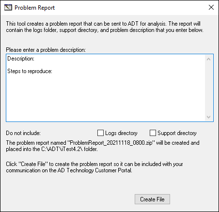
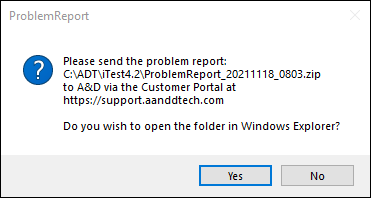
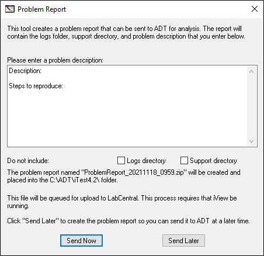
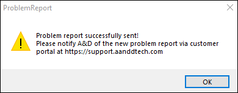

iTest User's Guide
ProblemReport creates a .zip file that can be used to recreate the iTest environment that a test was run in. This file is typically transferred to A&D Technology to document a problem report, or it can be stored for reference.
The .zip file contains files that A&D Technology support personnel use to perform crash forensics and diagnose problems. The following files are included in the .zip file:
ProblemReport can be run as a standalone dialog by double-clicking the ProblemReport.exe file in your $EXECUTEDIR, or it can be run from a command line. It's important to run ProblemReport before restarting iTest because older log files, that may contain important information, are erased on startup.
You can open the ProblemReport interface by running ProblemReport.exe, which is located in $EXECUTEDIR.
ProblemReport

The name of the problem report file is indicated on the ProblemReport dialog. For example, in the image above, the problem report file will be labeled ProblemReport_20211118_0800.zip. In the main text box, enter a description of the issue you are experiencing, steps to reproduce the issue, and any other information.
You can choose to exclude the logs directories and/or the support directory from the ProblemReport .zip file. If you select the checkbox to exclude the logs directory, it excludes the $SUPPORTDIR\logs folder and the $SUPPORTDIR\CrateSupport\logs folder from the .zip file . If you select the checkbox to exclude the support directory, it excludes the entire $SUPPORTDIR folder, but it will retain the $SUPPORTDIR\logs folder and the $SUPPORTDIR\CrateSupport\Logs folder (as long as you don't select the checkbox to exclude the logs directory).
 |
NOTE: | Only the iTest Console and AutomationPanel log files from the past 30 days are included in the ZIP. |
Click the Create File button to create the problem report, so it can be included with your communication on the A&D Technology Customer Portal. The problem report file will be located in the $SYSTEMDIR. After clicking, the following dialog will display:
Open Folder in Windows Explorer

ProblemReport can send a copy of the .zip file reports to a local folder, a network share, or LabCentral by using the ProblemReportDest config.ini setting. By default, this setting is not included in the config.ini and must be added in order to copy ProblemReport .zip files. If using a LabCentral sever, LabCentral will actively manage this setting by default starting when you first add the local PC as an iTest system on LabCentral.
In addition, ProblemReportDest controls where the automated problem report goes if a .dmp file is created. However, it can also be set to a hardcoded network path or can upload all of these files directly to LabCentral.
Syntax:
ProblemReportDest=
Examples:
Send to LabCentral:
ProblemReportDest=iCentral
Send to local folder:
ProblemReportDest=C:\ADT\iTest4.2\folder\
Send to network share:
ProblemReportDest=\\MyServer\Problemreports
When the ProblemReportDest is set to LabCentral, the ProblemReport interface includes the option to send the ProblemReport .zip file to the specified location immediately or in the future. Click the Send Now or Send Later buttons to determine when the file is copied; after clicking either button, the .zip file will be created in the $SYSTEMDIR. It may take a few minutes to upload the file.
|
NOTE: | If uploading to LabCentral, LabAgent must be running. |
Send to LabCentral

When the ProblemReport file is successfully sent, a dialog, similar to the one below, displays:
Problem Report Sent

To exit either dialog, you must click the X button in the upper-right corner.
This form is used to silently generate a .zip file and transfer it based on the config.ini setting ProblemReportDest.
Syntax:
ProblemReport.exe /AutoCrashProblemReport
This form is used to silently generate a .zip file that contains a backup of the test solution to a specified location. This is intended for preservation and reference.
|
NOTE: | This command line option does not include any existing crash dump (*.dmp) files, the $SUPPORTDIR\logs folder, or the $SUPPORTDIR\CrateSupport\logs folder. |
Syntax:
ProblemReport.exe /Traceability /OutFile <Full Path to output file>
Example:
ProblemReport.exe /Traceability /OutFile C:\Temp\SolutionPackage.zip
ProblemReport can automatically generate a .zip file under most crash conditions. This is controlled by the AutoCrashProblemReport config.ini option.
Syntax:
AutoCrashProblemReport=TRUE
If this option is missing, then a .zip file will not be generated, but you will be prompted to generate a .dmp file under most crash conditions. If this option is set to TRUE, then a .zip file will be silently generated and sent to the location specified in the ProblemReportDest config.ini setting.